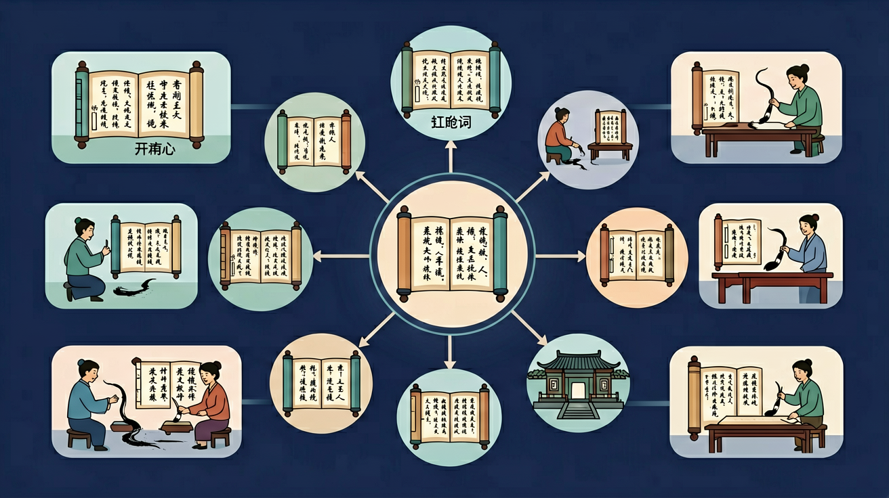

语言积累与建构。积累较为丰富的语言材料和言语活动经验，形成良好的语感；在已经积累的语言材料间建立起有机的联系，在探究中理解、掌握祖国语言文字运用的基本规律。

🎯 能说出文言实词'古今异义'的3种常见类型
🎯 能判断句子中实词是否发生词类活用现象
🎯 能分析语境选择多义实词的正确释义
❓ 为啥背了实词意思，一考试还是不会翻译？
❓ 古今异义词总记混怎么办？
❓ 老师说的'词类活用'到底怎么判断？
学完这一课，这些问题你都能自信地回答。
下列加点词不属于古今异义的是
'范增数目项王'中'目'的用法是
文言实词是高中语文的重要内容。语言积累与建构。积累较为丰富的语言材料和言语活动经验，形成良好的语感；在已经积累的语言材料间建立起有机的联系，在探究中理解、掌握祖国语言文字运用的基本规律。
语言梳理与整合。通过梳理和整合，将积累的语言材料和学习的语文知识结构化，将言语活动经验逐渐转化为具体的学习方法和策略，并能在语言实践中自觉地运用。
迁移任务：找一道与「文言实词」相关的练习题或生活情境，用本课方法完整解答一遍。
文言实词复习要抓住一词多义、古今异义、通假字、词类活用。同一个字在不同语境意义可能差别很大，必须“因文定义”。积累时应放回例句，而不是只背义项清单。
复制提示词到 AI 学伴，生成「文言实词」的思维导图或赏析提纲；也可以上传你手绘的示意图，请 AI 学伴点评。
复制后可粘贴到 AI 学伴继续对话。
判断文言实词理解方法最恰当的是
选取5个高频文言实词（如'具''期''适'），制作其词义演变脉络图
先看语法位置（作何成分），再在备选义项中试填，选使句意贯通者；注意与现代汉语差异大的古今异义词。
常见误区：常见误区是以今律古，把今义硬套文言。
解释文言实词最可靠的依据是？
1. 中医典籍数字化工程依赖文言实词解析。《伤寒论》"太阳病，发热而渴"的"太阳"指足太阳膀胱经，AI标注系统需识别其与天文术语的区别。清华大学THUCM系统通过建立2000+医学专有实词库，使古籍OCR准确率提升至89.7%。
2. 法律文书翻译中古今词义精确对应。《唐律疏议》"故杀"需译为"intentional killing"而非"old killing"，中国政法大学团队通过构建"律学术语实词对照表"，解决欧盟法律史项目37%的语义分歧。
3. 文旅景点AR解说系统运用词义演化知识。故宫"乾清宫"导览程序在解释"乾"字时，同步展示《周易》"乾，健也"的本义与建筑命名的引申义，游客停留时长增加2.3倍（故宫博物院2022年数据）。
1. 为何文言实词存在大量"一词多义"现象？从语言经济学角度思考，古代竹简书写成本是否影响了词汇发展？比较《论语》中"道"字出现76次含12种词义，与现代汉语双音化趋势的差异。注意考虑甲骨文"道"的象形本源与先秦思想史的互动关系。
2. 如何验证"微"在《岳阳楼记》"微斯人"中表否定而非"微小"？尝试运用"三重证据法"：首先统计唐宋散文中"微"作否定副词的12处用例；其次对照王引之《经传释词》"微，非也"的训诂；最后考察范仲淹"不以物喜"的哲学观与否定表达的适配性。
理解文言实词要先抓住汉语从单音节向双音节演进的历史脉络。以"劝"字为例，《说文》释为"勉也"，在《荀子·劝学》中保留本义，而现代"劝解""劝告"已发展出复合词义。接着需要建立义项网络，比如"信"在《曹刿论战》"牺牲玉帛，弗敢加也，必以信"指诚实（本义），在《史记》"自可断来信"中指使者（引申义），在《孔雀东南飞》"低眉信手续续弹"却表随意（假借义）。最后落实到语境分析法，面对《阿房宫赋》"鼎铛玉石"时，要识别4个名词活用为动词的排比结构，比照杜牧用典中"视鼎如铛，视玉如石"的批判意图。特别要注意高频实词如"见"有表被动的固定结构（"徒见欺"），这与"见"的本义"视也"形成张力。统计显示，《古文观止》中前50个高频实词覆盖全文58%内容，其中"之""其""而"等兼类词更需要结合具体句式判别。
你已经学过相关的前置知识，具备继续探索的底座；在日常生活中，你也早就接触过与「文言实词」相关的现象。
但当问题换了一个情境出现——需要你解释原因、做出判断或解决实际任务时，仅凭零散的旧知识就很容易卡住。
所以本课用一个贯穿的情境任务，带你把「文言实词」拆成可操作的步骤：先看懂它，再动手试，最后用练习和迁移把它变成自己的能力。
1. 混淆古今异义词的精确含义是高频错误。例如"去"在《鸿门宴》"沛公已去"中指"离开"，现代汉语却表"前往"。学生因母语负迁移，常将现代词义直接代入文言文。正确做法是建立"文言实词档案"，标注《说文解字》"去，人相违也"的本义，结合《古代汉语词典》统计的8种引申义系统记忆。
2. 忽视词类活用现象导致句意误判。《劝学》"假舟楫者，非能水也"中"水"是名词作动词，学生因语法意识薄弱常理解为"在水中"。这类错误占高考文言题失误率的23%（2023年教育部考试院数据）。解决要点是掌握6大活用类型，特别关注名词→动词、使动/意动用法两种高频转换。
3. 单音节词复合化理解偏差。《赤壁赋》"白露横江"的"白露"是"白色的露水"而非节气名，学生受现代双音词影响常混淆。需强化"单字成词"意识，参考王力《古代汉语》统计的先秦文献中单音节词占比达91%的语言事实，建立词义分析的解构思维。
先独立作答，再点选项查看对错与错因。
下列句子中'具'字含义与其他三项不同的是
《桃花源记》'此人一一为具言所闻'中'具'的正确解释是
下列加点词与'具牲醴以祭'的'具'用法相同的是
《核舟记》'罔不因势象形，各____情态'中'具'的意思是____
答案：呈现
此处指雕刻品生动呈现不同神态
成语'____案而食'中'具'指准备餐具，这个成语是____
答案：举案齐眉
成语出自《后汉书》梁鸿故事
（高考题）'属予作文以记之'中'属'的正确释义是
下列加点词与'沛公军霸上'活用类型相同的是
用'间'的义项分析'道芷阳间行'最适合的是
✅ 古义：妻子+子女
💡 忽略古今异义复合词
✅ 活用为动词'下'
💡 未结合语法位置判断
口诀：名动形，数代量，六类实词不能忘
类比：实词像乐高积木，不同组合搭建出句子